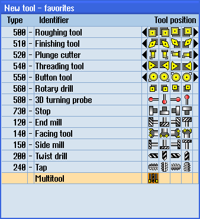
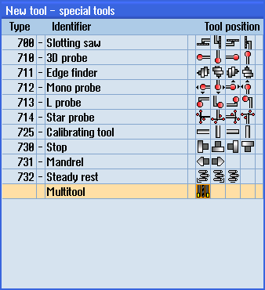
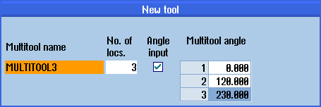

The multitool can be selected in the list of favorites as well as in the list of special tool types.

List of favorites with multitool

Selection list for special tools with multitool
Procedure
 | 1. | The tool list is opened. |
| | 2. | Position the cursor at the position where the tool is to be created. For this, you can select an empty magazine location or the NC tool memory outside of the magazine. You may also position the cursor on an existing tool in the area of the NC tool memory. Data from the displayed tool will not be overwritten. |
| | 3. | Press the "New tool" softkey. |
| | | The "New Tool - Favorites" window opens. |
| | | - OR - |
| | | Press the softkey "Special tool 700-900”. |
 | 4. | Select the multitool and press the "OK" softkey. The "New Tool" window appears. |
 | 5. | Enter the multitool name and define the number of multitool locations. If you wish to define the clearance of the tools based on the angle, activate the "Angle input" checkbox, and for each multitool location, enter the clearance to the reference location as angular value. |
| | |  |
| | | The multitool is created in the tool list. |
| Note |
The tool creation sequence can be defined differently. |
 | Machine manufacturer Please refer to the machine manufacturer's specifications. |